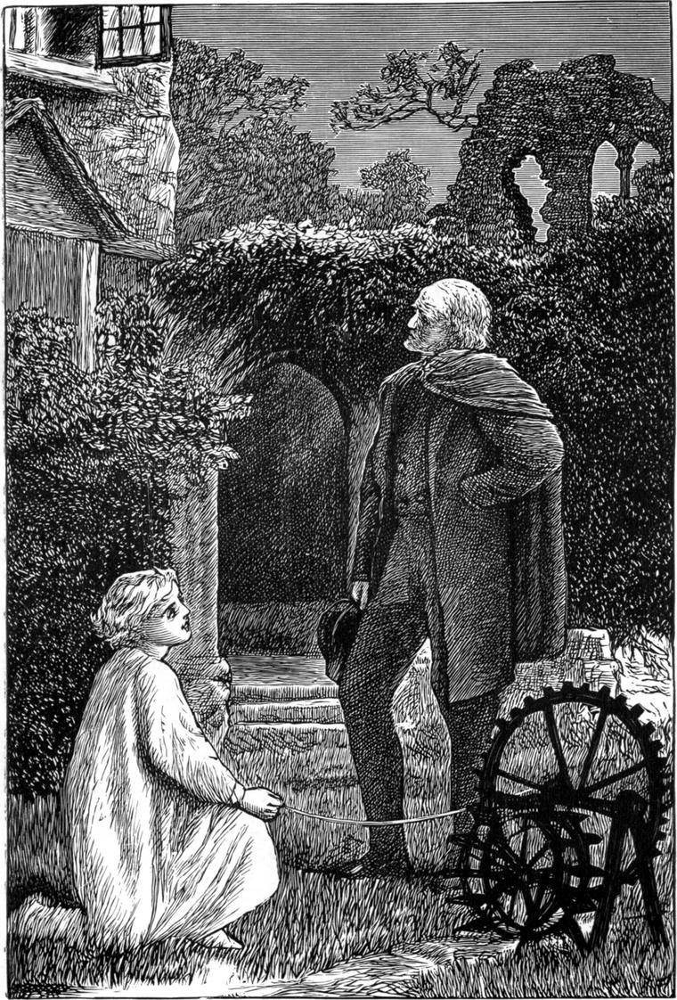

Willie was always thinking what uses he could put things to. Only he was never tempted to set a fine thing to do dirty work, as dull-hearted money-grubbers do—mill-owners, for instance, when they make the channel of a lovely mountain-stream serve for a drain to carry off the filth from their works. If Dante had known any such, I know where he would have put them, but I would rather not describe the place. I have told you what Willie made the prisoned stream do for the garden; I will now tell you what he made the running stream do for himself, and you shall judge whether or not that was fit work for him to require of it.
Ever since he had ceased being night-nurse to little Agnes, he had wished that he had some one to wake him every night, about the middle of it, that he might get up and look out of the window. For, after he had fed his baby-sister and given her back to his mother in a state of contentment, before getting into bed again he had always looked out of the window to see what the night was like—not that he was one bit anxious about the weather, except, indeed, he heard his papa getting up to go out, or knew that he had to go; for he could enjoy weather of any sort and all sorts, and never thought what the next day would be like—but just to see what Madame Night was thinking about—how she looked, and what she was doing. For he had soon found her such a changeful creature that, every time he looked at her, she looked at him with another face from that she had worn last time. Before he had made this acquaintance with the night, he would often, ere he fell asleep, lie wondering what he was going to dream about; for, with all his practical tendencies, Willie was very fond of dreaming; but after he had begun in this manner to make acquaintance with her, he would just as often fall asleep wondering what the day would be dreaming about—for, in his own fanciful way of thinking, he had settled that the look of the night was what the day was dreaming. Hence, when Agnes required his services no longer, he fell asleep the first night with the full intention of waking just as before, and getting up to have a peep into the day's dream, whatever it might be, that night, and every night thereafter. But he was now back in his own room, and there was nothing to wake him, so he slept sound until the day had done dreaming, and the morning was wide awake.
Neither had he awoke any one night since, or seen what marvel there might be beyond his windowpanes.
Does any little boy or girl wonder what there can be going on when we are asleep? Sometimes the stars, sometimes the moon, sometimes the clouds, sometimes the wind, sometimes the snow, sometimes the frost, sometimes all of them together, are busy. Sometimes the owl and the moth and the beetle, and the bat and the cat and the rat, are all at work. Sometimes there are flowers in bloom that love the night better than the day, and are busy all through the darkness pouring out on the still air the scent they withheld during the sunlight. Sometimes the lightning and the thunder, sometimes the moon-rainbow, sometimes the aurora borealis, is busy. And the streams are running all night long, and seem to babble louder than in the day time, for the noises of the working world are still, so that we hear them better. Almost the only daylight thing awake, is the clock ticking with nobody to heed it, and that sounds to me very dismal. But it was the look of the night, the meaning on her face that Willie cared most about, and desired so much to see, that he was at times quite unhappy to think that he never could wake up, not although ever so many strange and lovely dreams might be passing before his window. He often dreamed that he had waked up, and was looking out on some gorgeous and lovely show, but in the morning he knew sorrowfully that he had only dreamed his own dream, not gazed into that of the sleeping day. Again and again he had worked his brains to weariness, trying and trying to invent some machine that should wake him. But although he was older and cleverer now, he fared no better than when he wanted to wake himself to help his mother with Agnes. He must have some motive power before he could do anything, and the clock was still the only power he could think of, and that he was afraid to meddle with, for its works were beyond him, and it was so essential to the well-being of the house that he would not venture putting it in jeopardy.
One day, however, when he was thinking nothing about it, all at once it struck him that he had another motive power at his command, and the thought had hardly entered his mind, before he saw also how it was possible to turn it to account. His motive power was the stream from the Prior's Well, and the means of using it for his purpose stood on a shelf in the ruins, in the shape of the toy water-wheel which he had laid aside as distressingly useless. He set about the thing at once.
First of all, he made a second bit of channel for the stream, like a little loop to the first, so that he could, when he pleased, turn a part of the water into it, and let it again join the principal channel a little lower down. This was, in fact, his mill-race. Just before it joined the older part again, right opposite his window, he made it run for a little way in a direct line towards the house, and in this part of the new channel he made preparations for his water-wheel. Into the channel he laid a piece of iron pipe, which had been lying about useless for years; and just where the water would issue in a concentrated rush from the lower end of it, he constructed a foundation for his wheel, similar to that Sandy and he had built for it before. The water, as it issued from the pipe, should strike straight upon its floats, and send it whirling round. It took him some time to build it, for he wanted this to be a good and permanent job. He had stones at command: he had a well, he said, that yielded both stones and water, which was more than everybody could say; and in order to make it a sound bit of work, he fetched a lump of quick-lime from the kiln, where they burned quantities of it to scatter over the clay-soil, and first wetting it with water till it fell into powder, and then mixing it with sand which he riddled from the gravel he dug from the garden, he made it into good strong mortar. When its bed was at length made for it, he took the wheel and put in a longer axis, to project on one side beyond the gudgeon-block, or hollow in which it turned; and upon this projecting piece he fixed a large reel. Then, having put the wheel in its place, he asked his father for sixpence, part of which he laid out on a large ball of pack-thread. The outside end of the ball he fastened to the reel, then threw the ball through the open window into his room, and there undid it from the inside end, laying the thread in coils on the floor. When it was time to go to bed, he ran out and turned the water first into the garden, and then into the new channel; when suddenly the wheel began to spin about, and wind the pack-thread on to the reel. He ran to his room, and undressed faster than he had ever done before, tied the other end of the thread around his wrist, and, although kept awake much longer than usual by his excitement, at length fell fast asleep, and dreamed that the thread had waked him, and drawn him to the window, where he saw the water-wheel flashing like a fire-wheel, and the water rushing away from under it in a green flame. When he did wake it was broad day; the coils of pack-thread were lying on the floor scarcely diminished; the brook was singing in the garden, and when he went to the window, he saw the wheel spinning merrily round. He dressed in haste, ran out, and found that the thread had got entangled amongst the bushes on its way to the wheel, and had stuck fast; whereupon the wheel had broken it to get loose, and had been spinning round and round all night for nothing, like the useless thing it was before.
That afternoon he set poles up for guides, along the top of which the thread might run, and so keep clear of the bushes. But he fared no better the next night, for he never waked until the morning, when he found that the wheel stood stock still, for the thread, having filled the reel, had slipped off, and so wound itself about the wheel that it was choked in its many windings. Indeed, the thread was in a wonderful tangle about the whole machine, and it took him a long time to unwind—turning the wheel backwards, so as not to break the thread.
In order to remove the cause of this fresh failure, he went to the turner, whose name was William Burt, and asked him to turn for him a large reel or spool, with deep ends, and small cylinder between. William told him he was very busy just then, but he would fix a suitable piece of wood for him on his old lathe, with which, as he knew him to be a handy boy, he might turn what he wanted for himself. This was his first attempt at the use of the turning-lathe; but he had often watched William at work, and was familiar with the way in which he held his tool. Hence the result was tolerably satisfactory. Long before he had reached the depth of which he wished to make the spool, he had learned to manage his chisel with some nicety. Burt finished it off for him with just a few touches; and, delighted with his acquisition of the rudiments of a new trade, he carried the spool home with him, to try once more the possibility of educating his water-wheel into a watchman.
That night the pull did indeed come, but, alas before he had even fallen asleep.
Something seemed to be always going wrong! He concluded already that it was a difficult thing to make a machine which should do just what the maker wished. The spool had gone flying round, and had swallowed up the thread incredibly fast. He made haste to get the end off his wrist, and saw it fly through the little hole in the window frame, and away after the rest of it, to be wound on the whirling spool.
Disappointing as this was, however, there was progress in it: he had got the thing to work, and all that remained was to regulate it. But this turned out the most difficult part of the affair by far. He saw at once that if he were only to make the thread longer, which was the first mode that suggested itself, he would increase the constant danger there was of its getting fouled, not to mention the awkwardness of using such a quantity of it. If the kitten were to get into the room, for instance, after he had laid it down, she would ruin his every hope for the time being; and in Willie's eyes sixpence was a huge sum to ask from his father. But if, on the contrary, he could find out any mode of making the machine wind more slowly, he might then be able to shorten instead of lengthening the string.
At length, after much pondering, he came to see that if, instead of the spool, he were to fix on the axis a small cogged wheel—that is, a wheel with teeth—and then make these cogs fit into the cogs of a much larger wheel, the small wheel, which would turn once with every turn of the water-wheel, must turn a great many times before it could turn the big wheel once. Then he must fix the spool on the axis of this great slow wheel, when, turning only as often as the wheel turned, the spool would wind the thread so much the more slowly.
I will not weary my reader with any further detail of Willie's efforts and failures. It is enough to say that he was at last so entirely successful in timing his machine, for the run of the water was always the same, that he could tell exactly how much thread it would wind in a given time. Having then measured off the thread with a mark of ink for the first hour, two for the second, and so on, he was able to set his alarum according to the time at which he wished to be woke by the pull at his wrist.
But if any one had happened to go into the garden after the household was asleep, and had come upon the toy water-wheel, working away in starlight or moonlight, how little, even if he had caught sight of the nearly invisible thread, and had discovered that the wheel was winding it up, would he have thought what the tiny machine was about! How little would he have thought that its business was with the infinite! that it was in connection with the window of an eternal world—namely, Willie's soul—from which at a given moment it would lift the curtains, namely, the eyelids, and let the night of the outer world in upon the thought and feeling of the boy! To use a likeness, the wheel was thus ever working to draw up the slide of a camera obscura, and let in whatever pictures might be abroad in the dreams of the day, that the watcher within might behold them.
Indeed, one night as he came home from visiting a patient, soon after Willie had at length taught his watchman his duty, Mr Macmichael did come upon the mill, and was just going to turn the water off at the well, which he thought Willie had forgotten to do, when he caught sight of the winding thread—for the moon was full, and the Doctor was sharp-sighted.
"What can this be now?" he said to himself. "Some new freak of Willie's, of course. Yes; the thread goes right up to his window! I dare say if I were to stop and watch I should see something happen in consequence. But I am too tired, and must go to bed."
Just as he thought thus with himself, the wheel stopped. The next moment the blind of Willie's window was drawn up, and there stood Willie, his face and his white gown glimmering in the moonlight. He caught sight of his father, and up went the sash.
"O papa!" he cried; "I didn't think it was you I was going to see!"
"Who was it then you thought to see?" asked his father.
"Oh, nobody!—only the night herself, and the moon perhaps."
"What new freak of yours is this, my boy?" said his father, smiling.
"Wait a minute, and I'll tell you all about it," answered Willie.
Out he came in his night-shirt, his bare feet dancing with pleasure at having his father for his midnight companion. On the grass, beside the ruins, in the moonlight, by the gurgling water, he told him all about it.

"Yes, my boy; you are right," said his father. "God never sleeps; and it would be a pity if we never saw Him at his night-work."